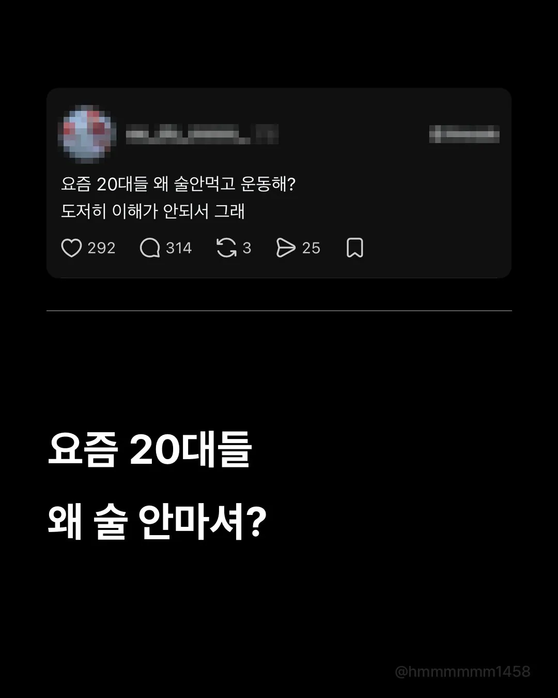
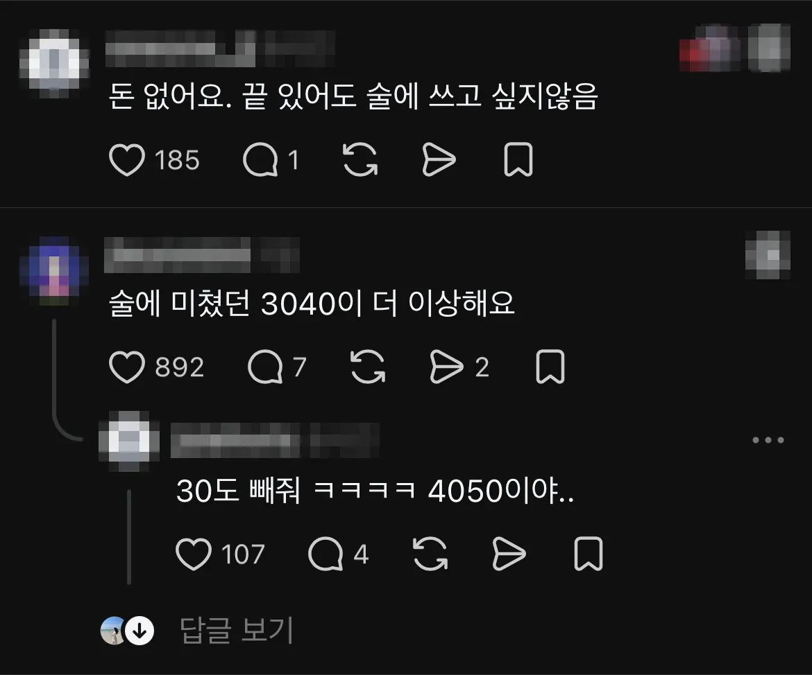

개젖두는 말했다
술은 백해무익하다고


개젖두는 말했다
술은 백해무익하다고
소주 6500원 보면 술맛떨어지지않나
소주를 이돈주고? 생각 많이듦
옛날에는 금주령까지해도 못막던걸 시대가지나니까 제발 마셔달라고해도 안마시는 시대로 가고있다는게
아닙니다. https://www.hankyung.com/article/202605283340i 다른술을 마시고 있는 겁니다. 건대 가보니 20대 남자 대학생들이 과실주 마시는거 겁나 많이 봤다. 소주 맥주만 술이 아니죠
과실주? 자몽에이슬 네 이놈!
내 생각엔 코로나 이후로 개인주의는 더 자리잡고 단체활동은 위축되어서, 술 문화가 이어지는 중간다리가 완전 끊어진거 같음. 굳이 술 아니어도 재밌는것고 많고 말이야
열심히 일하고 몸이 경직됐을때 술 한잔으로 풀어주는건 좋긴한데
퇴근하고 중국집이나 양꼬치집에서 기름진 음식에 고량주 한두잔 정도 넣는건 좋긴하더라
술부심 만큼 한심한게 없음 그래서 신동엽이나 성시경 같은 사람들 조면 참...
ㄹㅇ 그 둘은 그냥 알콜중독자 같음
예전보다 건강에 대한 관심이 높아져서 그런갑다 라고 생각하고 있는데. 나잇대를 떠나서 안마시는게 현명해
갠적으로 술조아하는 사람이랑은 한두번 끝까지 같이 달리고 친해졌다고 끝이아니고 끊임없이 계속 같이 달려줘야하는게있어서 버거움 ..
술을 안마시는게 이상하다고 생각하는게
이상하다고는 생각안해?
개 븅신같은 문화 좀 사라져야됨
회식문화 박살나는거 보면 속이 시원함
친구없고 고아거나 가족에게 버림받은 쓰레기들이
하루에 8시간동안 얼굴 맞대고 쳐봤으면 됐지
그걸 또 근무시간 끝나고도 "회식은 업무의 연장이다" 이 개 좆같은 소리로
회식참석 안하면 꼽주고 어쩌고
술 많이 쳐먹는 사람보고 "우와 ~ 술 잘마신다" 이딴 개븅신같은 문화도 없어지고
"우와 저 병신 술 쳐먹는거봐 존나 미련하다 " 라는 인식이 생겨야됨
담배 한번에 다섯까치씩 물고 피는 사람보고 "우와 어떻게 다섯까치나 물고 피지?" 이런 사람은 없는데
"나 5병 마셔 ~ " 이러면 개븅신들이 와 ~ 하는 꼬라지도 병신같음
개븅신같은 틀딱새끼들은 술 안마시는게 존~나 불편할거야
왜냐면 지들은 윗사람 술먹어주면서 똥꼬빨아주고 따까리짓 ㅈㄴ하면서
본인도 알콜중독자 돼서 술 쳐먹어야되는데
요즘애들은 술 쳐먹는거 싫어해서 따까리짓 제대로 시킬수도 없거든
따까리짓의 시작은 일단 술시중부턴데 시작부터 빠그라짐
원래 업무시간에 존내게 깬다음에 술자리 데려가서 술맥이면서
지들 말로는 속얘기라는데 개소리고 가스라이팅 존나 하면서
원래 회사생활 이런거다 어쩌고 집에 못들어가게하고
이미 버림받은 가족때문에 집에들어가기 싫으니까 아랫사람 붙잡고 늘어져야하는데
이제 분위기 바뀌고 지만 좆됐거든
게다가 술마시느라 병신된 몸 쳐다보다
요즘애들 보면 존나 화나는거지
그래서 존나 아니꼽게 보는거야 왜 술을 안쳐먹지 씹썌끼들
사회생활이란게 있는데 ? 이러면서
30대 후반 술 안마신지 10년즘 된듯?
20대들이 먹을만한게 소주 맥주인데 개좆같이 맛없으니 안먹는게 정상이지
준포티인데 친구들이랑 만나면 세차하고 24솨 맥도날드 가서 죽치고 있음 와이프나 친구들 와이프들도 구라치고 딴짓하는거로 생각했었는데 이젠 다들 믿어줌
누가 안 멕이면 그 걸 뭔 맛이라고 먹겠어
대학때부터 개 좆같은 새끼들이 우리과가 주량 1등인데 신입생이 못먹으면 되겠냐 이지랄하면서 억지로 술먹이고 이전 회사에서도 그지랄해서 때려치고 이직함
어디 지잡대 좆소도 아닌데도 그랬다
질병관리청 피셜로 2016년 대비 2025년 20~30대남 월간 음주율이 10퍼센트 이상 내려갔다고 함 2025년 기준 20대는 66.1퍼 30대는 71.5퍼 코로나가 큰일했다
이새끼들은 양주위스키 얘기하면 누구보다 좆문가인척하면서 술왜먹음 이러는글에는 또 동조하고있네 알수가없다 ㅋㅋㅋㅋ
거긴 양주먹는 사람들이 주로 달았겠죠? 여기는 술 안먹는 사람들이 더 달았겠고
5000원 넘어가는 소주? 퉤
영포티 새끼들 제대로 된 취미 없어서 술 먹고 유흥하는걸 이것도 사회 생활이라고 설교 하는거 개짜증남
술 먹고싶은 사람은 마시면 되고 안먹고싶은 사람은 안마시면 되는데 술 안먹겠다는 사람들보고 무슨 사회부적응자니 찐따니 이상한 프레임씌워서 줘패던 예전이 비정상적이었던거지
술마시는사람 정상
술안마시는사람 정상
밖 말고 집에서 와이프랑 위스키, 브랜디 홀짝하는게 진짜 좋음 ㅋㅋㅋㅋ
홈그라운드에 샷당 단가에 피시방 모드 개꿀
유튜브가 있는데 술을 왜 마심